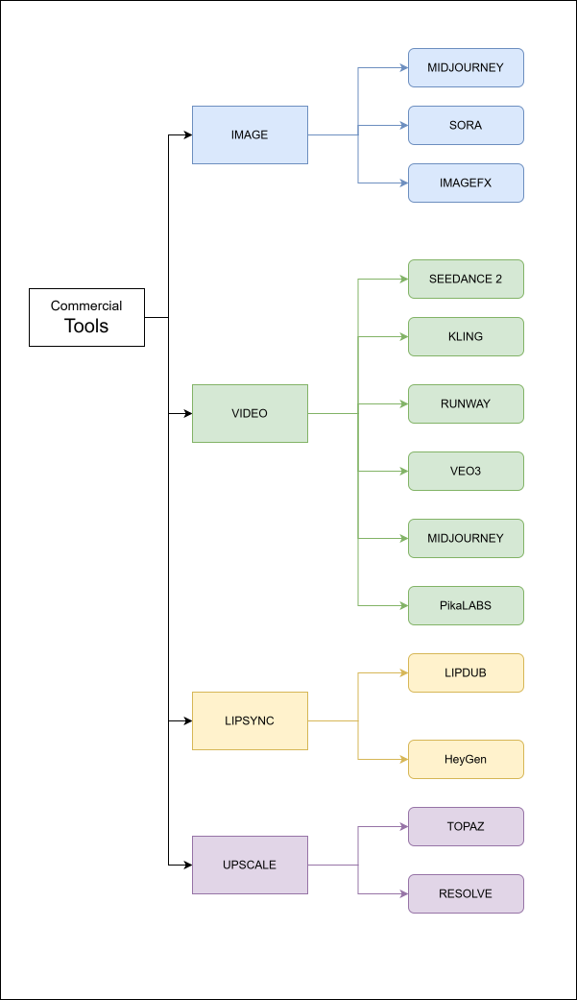

Commercial tools occupy a different role in the pipeline than open-source infrastructure. They are accessed via API or subscription, require no local hardware, and are typically updated continuously by their providers. The trade-off is cost at scale, dependency on external services, and less control over model versioning. The tools listed here are those with a proven production record — fast enough to use in volume, reliable enough to depend on for deliverables.

Image Generation
Midjourney is the current benchmark for commercial image quality. Operates via Discord and a web interface; no local install required. Excels at stylised, editorial, and character reference imagery. Prompt-driven with strong aesthetic coherence across generations. The go-to for concept art, character sheets, and mood boards where photorealism is not the primary goal.
ImageFX is Google's consumer-facing image generation tool, powered by Imagen. Strong photorealistic output with good prompt adherence. Useful as a fast alternative to Midjourney for reference images and as a secondary generation pass when diversity of output matters.
Video Generation
Sora is OpenAI's video generation model. Produces high-quality, physically coherent video from text and image prompts. Particularly strong on camera motion, lighting behaviour, and scene consistency over longer clips. Access is via subscription.
Kling is Kuaishou's video generation model. Competitive with Sora on character motion and face consistency; notable for its image-to-video performance using a reference frame as the identity anchor. Widely used for character animation work.
Runway is a video generation and editing platform with a broad toolset — text-to-video, image-to-video, inpainting, motion brush, and Act-One for performance capture. Strong API and integrations make it pipeline-friendly. Gen-3 Alpha is the current production model.
Veo 3 is Google DeepMind's video generation model. Produces high-resolution, long-duration video with strong temporal consistency. Available via Vertex AI and Google Labs products. Competitive on cinematic realism and prompt-to-motion fidelity.
Seedance 2 is ByteDance's video generation model. Strong performance on human motion and character consistency across cuts. Integrated into CapCut's commercial tooling; also accessible via API.
Pika Labs offers text-to-video and image-to-video generation with a focus on fast iteration and creative control. Notable for its effects pipeline — modifications to specific objects or regions within a video — and for accessible pricing at lower volumes.
Lip Sync
HeyGen is the production standard for AI-driven lip sync and avatar video. Given a portrait and an audio track, it generates a talking-head video with accurate lip movement and natural expression. Used for character dialogue, localisation dubbing, and presenter video at scale. Strong API support.
LipDub handles audio-driven lip sync as a compositing pass — applying generated lip movement onto existing footage rather than generating a full avatar video. Used when the body performance already exists and only the mouth region needs to be driven by a new audio track.
Upscaling
Topaz produces the best-quality AI upscaling currently available for both photo and video. Topaz Photo AI and Topaz Video AI handle resolution enhancement, noise reduction, motion deblur, and frame interpolation. A standard final-pass tool for any AI-generated output before delivery.
DaVinci Resolve includes Super Scale, an AI-based upscaling feature built into the colour and delivery pipeline. Useful for upscaling within an existing Resolve workflow without routing files through a separate application. Less aggressive than Topaz but faster when working inside Resolve on full timelines.